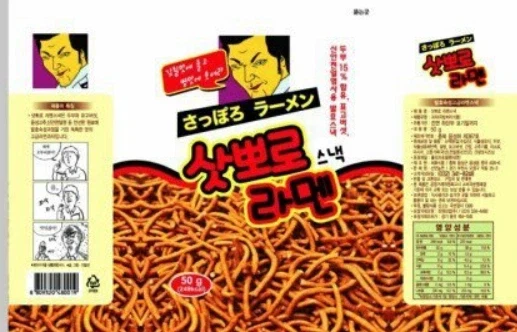
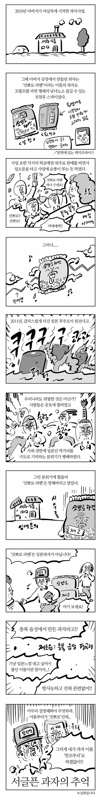

세화식품 사장이 이말년 아버지라서
세화라는 이름부터 침착맨 여동생 통천 본명이다


세화식품 사장이 이말년 아버지라서
세화라는 이름부터 침착맨 여동생 통천 본명이다
아...씁...일단 알겠습니다
이세화 중사님
핫꼬부리도 괜찮긴 한데 ㅋㅋㅋ
그래서 결국 2짤 핫꼬부리로 개명한건가?ㅋㅋㅋ
와 침착맨 부잣집 도련님이였네…과자공장 아들 ㄷㄷ
10년에 시작했는데 11년에 지진 났으니...
저거 맛있던데 이제 안팔아?
조석 장인도 ㅋㅋ
일본지진이던 코로나던 그런 천재지변으로
사업 말아먹은 사람들 꽤나 많은거같음.
그럼 동생 이름 침세화임?
이리즈
??? : 저작권으로 걸수있지만 니 아버지잖아 미친새끼야